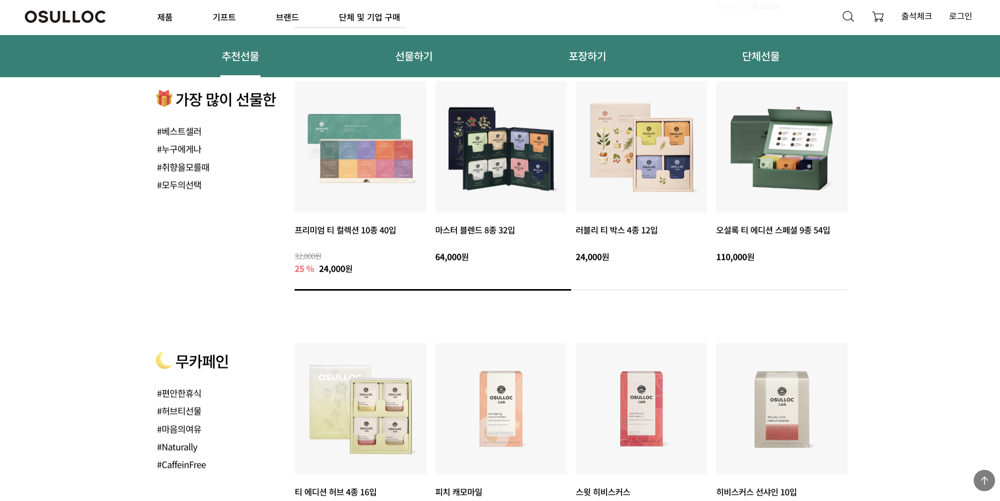

오설록 '선물하기' 서비스 리딩 및 채널 리포지셔닝
오설록
Product OwnershipBX/CX 설계E-Commerce
[문제 정의] 기능적(가격/배송) 우위 확보가 어려운 자사몰의 명확한 정체성과 핵심 성장 동력이 부재했습니다.
[관점의 재해석] '판매 채널'에서 '가치를 선물하는 브랜드 경험 채널'로 포지셔닝을 전환했습니다. 브랜드 철학을 디지털 고객 여정으로 번역하여, 사용자가 '선물'이라는 감성적 가치를 온전히 느낄 수 있는 구조를 설계했습니다.
[결과 및 성과] 선물하기 전용 UX, 콘텐츠, 패키지를 기획하여 '선물할 땐 오설록'이라는 독자적 포지션을 구축하고, 유의미한 구매 전환율 상승을 이끌었습니다.
